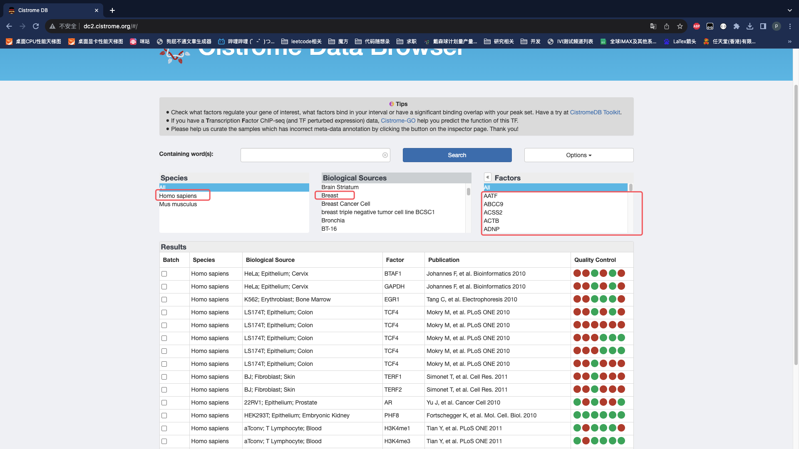
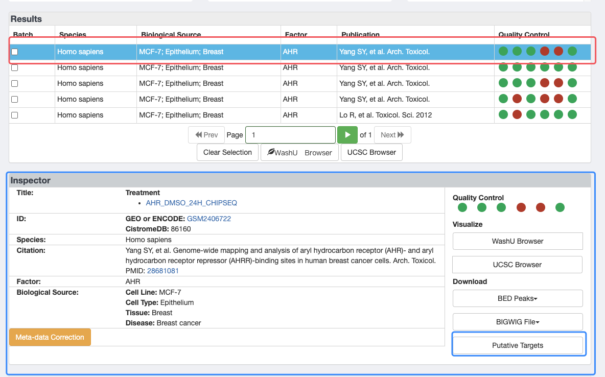
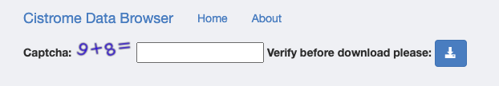
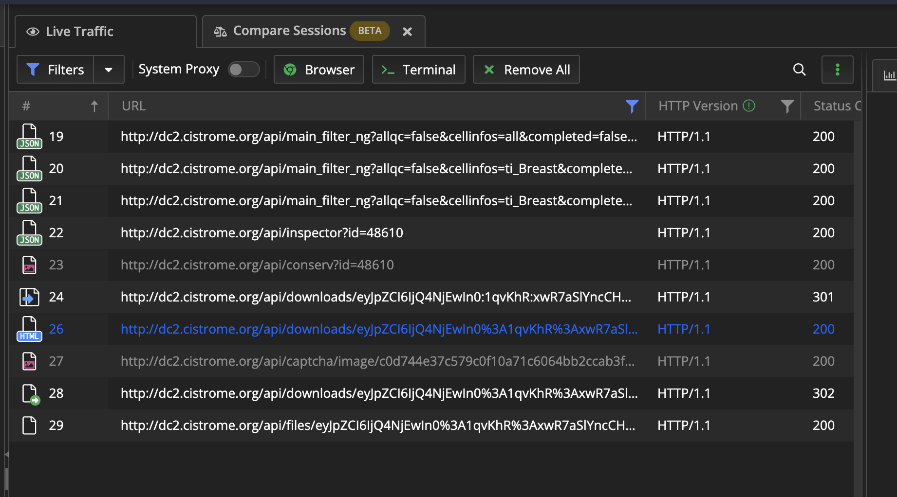
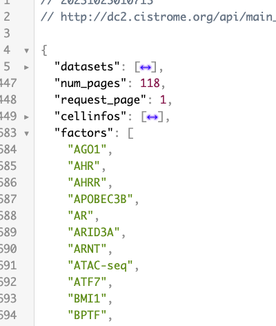
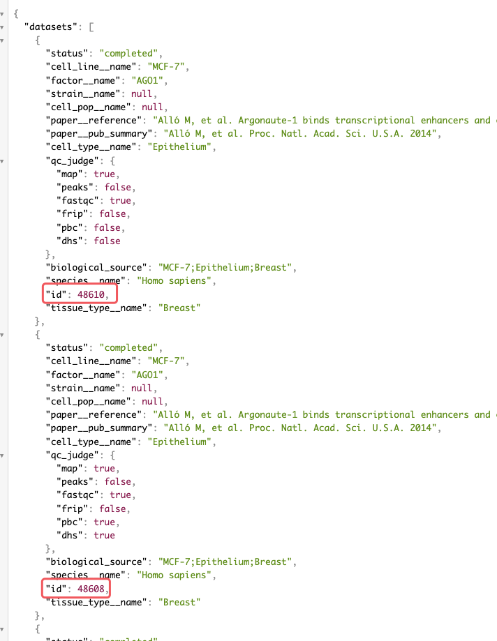
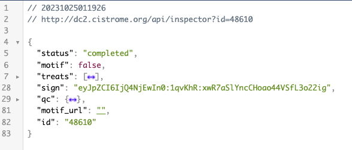

【debug】记一次失败的爬虫经历
今天我的室友需要在一个网站上批量下载一些数据，但是他并不会代码，我尝试帮他处理一下
URL:http://dc2.cistrome.org/#/

网站上需要点击这些选项，Factors需要每个点击，可能有些因素并没有数据。

先选中第一行，然后才会出现下方的Inspector部分，再点击Putative Targets进入下载页面

下载页面输入验证码点击下载即可。
1. 分析、抓包
抓包使用了Fiddler这个软件。设置好URL进行筛选

先正常的操作一遍，让Fiddler记录这个过程。

依次查看每一行：
- 19~21：选择第一张图的一些条件，一共要选三次，出现了三条数据，分析其中参数很简单。需要查找factors的列表
- 22：加载第二张图的Inspector部分，需要查找id
- 23：在第二张图最下面还有一部分，我没有截出来，这里是获取到一张图片
- 24：向URL请求，此处的URL里面都是冒号，返回的是301，重定向将冒号替换为
%3A的URL编码
- 26：重定向，返回的是验证码的那个页面
- 27：请求验证码的图片
- 28：提交验证码
- 29：下载链接（返回txt文件）
2. 获取每个部分的关键数据
导入相关的包
1
2
3
4
5
| import json
import time
import requests
from bs4 import BeautifulSoup
|
获取每个factors

根据上面分析，使用第20行的URL即可得到所有的factors，然后替换其中的factors=all，将all替换为每一个factors即可。
1
2
3
4
5
6
7
8
9
10
11
12
13
14
15
| url1 = "http://dc2.cistrome.org/api/main_filter_ng?allqc=false&cellinfos=ti_Breast&completed=false&curated=false&factors=all&keyword=&page=1&peakqc=false&run=false&species=Homo+sapiens"
headers = {
"Accept": "text/html,application/xhtml+xml,application/xml;q=0.9,image/avif,image/webp,image/apng,*/*;q=0.8,application/signed-exchange;v=b3;q=0.7",
"Accept-Encoding": "gzip, deflate",
"Origin": "http://dc2.cistrome.org",
"Accept-Language": "zh-Hans-CN,zh-Hans;q=0.8,en-US;q=0.5,en;q=0.3",
"Host": "dc2.cistrome.org",
"User-Agent": "Mozilla/4.0 (compatible; MSIE 7.0; Windows NT 10.0; WOW64; Trident/7.0; .NET4.0C; .NET4.0E; Tablet PC 2.0; wbx 1.0.0; wbxapp 1.0.0; Zoom 3.6.0)",
}
session = requests.session()
response = session.get(url, headers=headers)
json_list = response.json()["factors"]
|
3. 获取inspector中的id值
为了方便书写，就以第一个factors作为演示
继续刚刚请求，将新的factors替换，查看response的结果

有可能Inspector中会出现多栏，经过查阅后去第1个id就好
1
2
3
| url2 = f"http://dc2.cistrome.org/api/main_filter_ng?allqc=false&cellinfos=ti_Breast&completed=false&curated=false&factors=AHO1&keyword=&page=1&peakqc=false&run=false&species=Homo+sapiens"
response = session.get(url2, headers=headers)
id = response.json()["datasets"][0]["id"]
|
4. 跳转至验证码页面
根据Fiddler中的URL显示：http://dc2.cistrome.org/api/downloads/eyJpZCI6IjQ4NjEwIn0%3A1qvKhR%3AxwR7aSlYncCHoao44VSfL3o22igp
需要查看最后面一串字符是什么或从哪里来。我们查看22行的请求

进入22行的请求发现就是sign这一项，并且将冒号替换为%3A即可。
1
2
3
4
| download_url = f"http://dc2.cistrome.org/api/inspector?id={id}"
response_url = session.get(download_url, headers=headers)
sign = response_url.json()["sign"]
sign = sign.replace(":", "%3A")
|
5. 输入验证码
这一步之前，发送了两个请求，一个是获取HTML，一个是获取验证码。分析27行的数据，能发现最后与刚刚的sign值完全不同，查看27行最后一串是什么。
分析获取到的HTML，能看到如下内容

红色是为27行的URL最后的部分，绿色则是要提交的表单，将验证码下载到本地手动数据数据再提交上去。
1
2
3
4
5
6
7
8
9
10
11
12
13
| soup = BeautifulSoup(response.content, "html.parser")
img_tag = soup.find("img")["src"]
img_id = img_tag.split("/")[-2]
img_url = "http://dc2.cistrome.org" + img_tag
image = session.get(img_url, headers=headers)
with open("test.png", "wb") as f:
f.write(image.content)
captcha = int(input("输入test.png的验证码"))
data = {
"csrfmiddlewaretoken": session.cookies["csrftoken"],
"captcha_0": img_id,
"captcha_1": captcha
}
|
6. 问题出现
分析28行请求

看起来只需要POST以下三个数据就好，之后再get29行操作，但是始终拿不到正确的数据
1
2
3
4
| response = session.post(url=download_url, headers=headers, data=data)
download = session.get(f"http://dc2.cistrome.org/api/files/{sign}/", headers=headers)
with open("test.txt", "w") as file:
file.write(download.text)
|

无论如何都是错误的参数，看了好多次都没有找到哪里请求有问题。
尝试改了session.post(data)参数，改成json也不对。改了data中的captcha_1的类型也不对。传输字符串的形式也不对session.post(data=f"csrfmiddlewaretoken={session.cookies['csrftoken']}&captcha_0={img_id}&captcha_1={captcha}")。
但是我在网页先进行输入验证码操作，拿到可以下载的“权限”之后，再去fiddler中模拟29行get请求却可以正常下载。想了好久也没找到什么好的办法。
7. 验证码其他的失败的想法
- 最开始认为验证码如果人为输入会比较慢，应该让AI去识别，识别到字符串之后使用python中的
eval()语句获得到结果。后来测试两个发现识别的非常不准。因为运算符不是常规角度，有可能会被识别为字母。最后放弃了这个方法。
captcha_0和captcha_1这两个参数一个是验证码的id，应该为后台数据库存储的名字，一个是计算结果。尝试了始终使用一组正确的不断的请求骗过服务器验证。还是因为卡在了上一步始终为参数错误，再过了一会就显示Time Out!。我觉得如果参数正确可以尝试一下这个方法。- 尝试SQL注入，使用语句
' or 1=1 --还是失败。